Enter the Name of the Galaxy, for example: Milkyway.
Enter the average size of the Sun, for example: 864,575.9 miles in diameter.
Enter the Livable Planet Size, for example: Earth is 7926.2109 miles in diameter.
Trinary means 3 logical states, meaning God.
Enter the Number of Trinary Engines, for example: The Milkyway has 333.
The Track that supports Life, for example: 666 in our Solar System.
The Torah tells us Life is on Track 666, and that is our Galaxy, not every Galaxy, so you can change it.
This Track also sets the rate for every other Track, because they all orbit at the same rate, like a record player.
It must be a Track this Galaxy has, from 1 up to Trinary Engines times 4.
With 333 Trinary Engines that is 1 to 1,332, and out of range falls back to Trinary Engines times 2.
Enter the Radius of one Track, in miles. This is not the radius of the Galaxy.
Track n sits at this radius × n, so the Milkyway's default of 238,229,441,887,838.4639953874 miles puts Track 666, the Life Track, at 26,990 light years from the centre — where the Sun is measured to be.
The last Track, Trinary Engines × 4, gives the radius of the Galaxy: 53,979 light years for the Milkyway. That is the size the model allows, not a count of where Suns are. The outer Tracks may be empty.
Enter the Number of Track records to skip.
The smaller the number, the longer the list.
The number must be greater than 0, and less than 1,000.
For example: If you skip every 66 records, you get a list of 21 records.
Every number in the table below comes from the values above, so each step can be checked
rather than taken on trust.
The Livable Planet Ring Frequency is the one to look at first: it comes out at 7.830 Hz,
and the Schumann resonance, the frequency of the cavity between the Earth and its ionosphere,
is measured at 7.83 Hz.
| Track | Engines | Max Speed (mph) |
Min Speed (mph) |
Frequency (Hz) |
Orbit Distance (miles) | Track Frequency (Hz, or years) |
|---|
Some of the values this calculator uses are not the ones a textbook gives, and a reader is entitled to know
which, by how much, and why. Nothing here is hidden in a footnote.
The full line by line comparison, every value against the current published figure, in miles and in percent,
with sources named, is in ACCURACY.md.
| Value | Mine | Mainstream | Off by | Why |
|---|---|---|---|---|
| Earth diameter | 7,926.2109 mi 12,756.10 km |
7,926.3812 mi 12,756.27 km |
−0.0021% | This is the equatorial figure, and the one Newton used. Mainstream often quotes the mean instead, 7,917.51 mi, which is a different measurement of the same planet, not a better one. |
| Earth orbital speed | 66,666.666 mph 29.80 km/s |
66,616 mph 29.7827 km/s |
+0.076% | The model anchors on 66,666 mph. The difference is parked in the year, 365 days against the sidereal 365.256, rather than in the distance. |
| Sun's distance from the galactic centre | 26,989 ly 8.275 kpc |
26,673 ly 8.178 kpc |
+1.19% | It falls between the IAU's own standard of 8.5 kpc, used from 1985 to 2010, and the GRAVITY measurement of 2019. The published figure has moved across that range within living memory. |
| Sun's orbital speed | 499,999.5 mph average 223.5 km/s |
492,126 to 559,234 mph 220 to 250 km/s |
inside the band | Published figures assume one constant speed. This model does not: the path is a corkscrew, slowing above and below the disk and speeding through it, so the Track carries a maximum of 666,666 mph and a minimum of 333,333 mph, and only the average can be compared. |
| Gravitational constant G | 6.67430 × 10−11 | 6.67430 × 10−11 | 0.0000% | The current CODATA value. It was 6.66 in Boys and Braun's day, and that history is kept as a note; the arithmetic here never multiplies G by a mass, so the fourth digit never reaches the result. |
| The nine Solar System bodies | diameters, rotations, orbits | IAU and NASA | within 0.13% | Six of the nine are inside 0.04% on every column. The orbit distances are true elliptical path lengths rather than circles, which is why Mercury, the most eccentric orbit in the set, matches to 0.010%. |
Where a value differs, it is a choice that is stated, not an error left in. Where it agrees, it agrees without anything having been tuned to make it agree.
Each line in the table is a track that represents the Sun's path as it orbits the Galaxy.
The last Track a Galaxy can have is its Trinary Engines times 4, so the Milky Way runs from
Track 1 to Track 1,332, and the heading above the table says so for whatever Galaxy you enter.
This calculator does not know how many Tracks a Galaxy has. The Engine count is an input, not a
result: counting Tracks is a visual account taken from images, and no formula here produces it.
Not every Track carries a Sun. This is written for any Galaxy, and there is no way to know from
here how many Suns a given Galaxy has or which Tracks they sit on.
The inner Tracks are hard to measure in real life because they are so close in to the center.
The Tracks show the movement of the Suns. They are not the Spiral Arms. The Arms show the path of the debris, which is a different thing on a different path, and the two should not be read as the same.
The Sun does not travel a flat circle. It moves like a waveform, rising above the Galactic Plane
and falling back below it while it goes around.
The Track Frequency column is that waveform. At Track 666 it reads 60,000,060: a whole cycle,
up through the Galactic Plane and back down again. Half of it, 30,000,030, is one crossing.
It is not the time to go around the Galaxy. Going around takes about 3.791 of these cycles.
The number reads two ways, and both are meant. As a frequency it is 60 MHz, the carrier the
Galaxy sweeps its Tracks with, in the band where galactic noise is strongest in the radio sky.
As time it is 60,000,060 years, the period of the same wave. Frequency is Time and wavelength
is Distance, at different scale.
A full cycle up and back down is 60 million years, and the orbit holds about 3.791 of them.
Astronomers measure the Sun crossing the Galactic Plane about every 30 million years,
with a full vertical period near 60 million, and about 3.8 of those to one trip around.
This number does not come from the Track Radius. Halve the Radius or double it and the Track
Frequency does not move, because it comes from Min Speed and the Life Track,
not from the size of the Galaxy.
The Torah tells us that only track 666 supports life as we know it.
Max Speed and Min Speed are the two ends of one range, not two separate numbers.
A Sun on Track 666 travels somewhere between 333,333 and 666,666 mph, which averages
499,999.5 mph, which is 223.5 km/s. The Sun is measured at 220 to 250 km/s, or 492,126 to 559,234 mph.
Current science puts our Sun at a fixed speed, but the speed only changes over millions of years,
so a fixed figure is an assumption, not a measurement.
Every Sun varies to the same degree, so the Clock stays the same and only the speed changes.
You can use this data to plot the orbital path of any Star, in any Galaxy, and given a Planet Size, you can determine where Life exists in the Galaxy.
Henrietta Swan Leavitt worked for Edward Charles Pickering at the Harvard College Observatory, where she was hired in 1902, and she died in 1921. She did not work for Edwin Hubble, the man the telescope is named after. Hubble used her work after her death to measure the distance to other Galaxies, and is reported to have said she deserved the Nobel Prize for it. That account is widely repeated but I have not found the original source for it.
Her published discovery is the period to luminosity relation for Cepheid variables, now called
Leavitt's Law, which gave astronomy its first way to measure distance.
Her observations also showed the inner stars moving faster than anyone expected, and that the Suns
orbit the Galaxy together.
The words they orbit at the same rate, but not the same speed
are mine, not a quote from her.
That is my reading of what her observations show, and this calculator is here to test it.
This means they all travel around the galaxy as if they were a record on an old-fashioned record player.
Kepler wrote about the Star of Bethlehem in De Stella Nova, and implied Christ is a Star,
and we know it as Sirius.
It aligns with the Great Pyramid every year on 25 December under the Julian Calendar or 14 January under the Gregorian Calendar.
It is a Binary Star, combined with our Sun, which is also a Star; you have 3 Stars; this is Trinity.
This system will orbit the Galaxy together, in the pattern an electron orbits an atom, and for the same reason, they are the same, only on a different scale.
Trinary and Trinity mean the same thing, with the exception that Trinary is a Science based on 3 Logical State Changes shown in the graph below.
At the Atomic Level, atoms will have a Solid State, which means it is in all 3 dimensions of space, width, depth, and height.
The Arabic numbering system is based on angles, for example, 1 has one angle, 2 has two, 3 has three, and so on. 0 has zero angles.
Trinity uses the logic of 1 and 0, much like Binary, but Trinary makes it 3 states, +1, -1, and 0.
Trinary Science is based on the Newtonian Universe and does not change anything, unlike Einstein, who did the complete opposite.
This combines Kepler, Newton, and Nikola Tesla into one Science.
The math and the concepts for treating Gravity as a wave come from Tesla,
the orbital work from Kepler and Newton, and the rest I added to get the results I needed.
Published as a book in 2019, written in 1988.
There is no proof that Gravity is caused by Centrifugal force.
There is proof that electromagnetic forces act over great distances, and that is what this is built on.
Newton implied Light is Static, as proof it has no acceleration.
Einstein implied Light is Dynamic; the opposite, and Newton ruled it out by holding Light has no acceleration, three centuries before Einstein was born.
Trinary Science is based on what can be proven, and a Dark Star and its Companions are well-documented in images, like the ones Leavitt studied and observed.
Leavitt did not call them Dark Stars. Newton implied they are Dark Angels, in the notes I was given, and
Halley implied they are Dark Stars, though the term Star was not always accurate.
Women at the Harvard College Observatory were hired as computers, paid less than the men, and were not
credited the way the men were. Leavitt was one of them, and her Law carried Hubble's career.
I am going with Henrietta on this subject in science.
The world was taught that Black Holes existed when Dark Stars existed, and the name changed everything.
A Black Hole is some magical hole that defies all known physics, or common sense.
The theory states a collapsed Galaxy or Star, created a vortex to another dimension in Space.
Einstein implied this is an Alternate Universe in Alternate Reality.
Alternate and Alternative do not mean the same thing, we cannot apply Dynamic Light to a Universe where Light has no acceleration.
Do not confuse a Deity God
that does not exist to a God who is all Light without Darkness which exists.
As proof, ask the Church if God physically exists, we know the answer is no.
In Trinary Science, Christ is the Binary Star we know as Sirius, which is key to the End of Time Event.
In the Torah, when it said Christ is Born on 25 December under the Julian Calendar, is now 14 January, so we know this is when Sirius or Christ the Star, aligns with the Great Pyramid, and it when Earth is closest to the Sun, giving it the power to be born. In reality, this event can be viewed by looking for Sirius in the Sky; it only marks this date.
Trinary Science added Trinary Engines, which Edmond Halley implied are Dark Stars, from dictation he took for Sir Isaac Newton.
The term Star sounded more scientific than Dark Angel and its Fallen Angel Companies.
The prefix Trinary means this is based on 3 Logical State changes in Atoms.
Trinary, Trinity, and God, all mean the same thing and are interchangeable.
Trinary means the Science of God, the same as Newtonian Science, only Trinary Science added Trinary Engines.
Halley might have been the first one to use the term Dark Star, which is a Trinary Engine.
Newton implied the Dark Angels are heavenly bodies we orbit around without ever knowing they are there,
in the notes rather than in the Principia.
Fallen Angels are the Companies of the Dark Angel that orbit around a Galaxy, to keep all the Suns on the right track.
This is from the Torah, the one with the Pagan Beliefs in them.
To prove to anyone that Newton is right, I give you the following 3 facts we can all agree on.
Planetary Orbital Speed Calculator:
https://am-tower.com/documents/#orbitalspeeds
The source code is on GitHub:
https://github.com/AM-Tower/Planetary-Orbital-Speed-Calculator/
The God Formula is (+1) + (-1) = 0. Tycho Brahe implied it is a mathematical Truth statement.
This is not an Equation; it is a Formula.
This graph will show you the Waveform of an Alternating Current (AC),
much like our Brainwave, it is our Soul, because it takes electricity to make Light and God is all Light without Darkness found inside Atoms.
Sir Isaac Newton did not write, in so many words, that God is the Force of Gravity in his Equations.
In the General Scholium to the Principia, second edition of 1713, he wrote that the system
could only proceed from the counsel and dominion of an intelligent and powerful Being
, and on what
causes Gravity, in the same passage, hypotheses non fingo
— I frame no hypotheses.
Those two are his own words and can be checked in any edition.
His published books leave out a great deal that is in his notes, and taking those notes together
with the Principia, his work implies it, In My Opinion.
So F = MA, where F is the Force of Gravity in terms of the Light without Darkness found inside all the Atoms in the Universe, and everything is made of Atoms. That is what Newton implied, and it is what this calculator is built on.
The calculator uses 1 divided by 137 as the Trinary Marker. That is the fine structure constant,
which mainstream physics writes as alpha, and measures at 1 divided by 137.035999.
It is the coupling constant of electromagnetism, the number that sets how strongly Light and
charged matter interact. For a model that treats Gravity as a Frequency, the same as Light,
in an electromagnetic system, that is the right constant to be holding, and it is not an
arbitrary choice. It is the one number in physics that already ties Light to matter.
The Galaxy Calculator Formula, together with God's Formula, make up one Formula that explains the Universe.
Trinary Math describes how this math works, what every constant means, why it uses arbitrary precision instead of floating point, and it walks Track 666 through the whole calculation.
Galaxy Plot takes the table above and plots the course of every Sun in the Galaxy, so you can watch them orbit in relationship to each other, and see for yourself whether they hold formation the way Leavitt implied they do.
| State | Trinity | Visibility | Dimension |
| ----- | --------| -----------|-----------|
| (+1) | Father | Solid | 3D |
| 0 | Mother | Invisible | 0 |
| (-1) | Son | Semisolid | 1 or 2 |
| State | -------- Graph ----------------- |
| (+1) | *-------*-------*-------*------- |
| 0 | --*---*---*---*---*---*--------- |
| (-1) | ----*-------*-------*----------- |
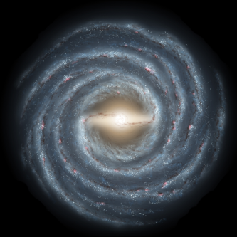
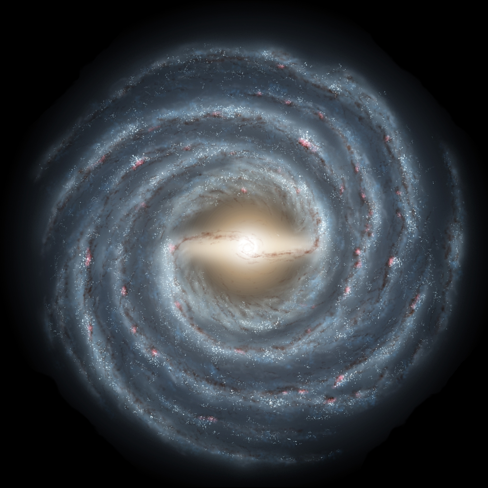
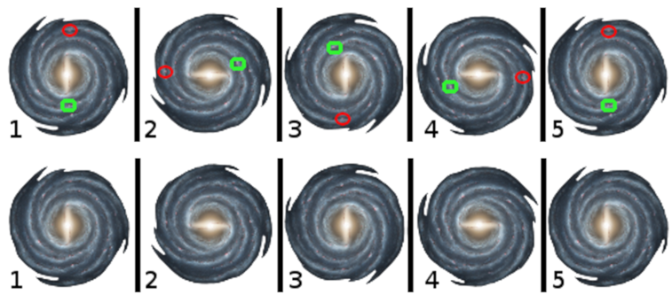
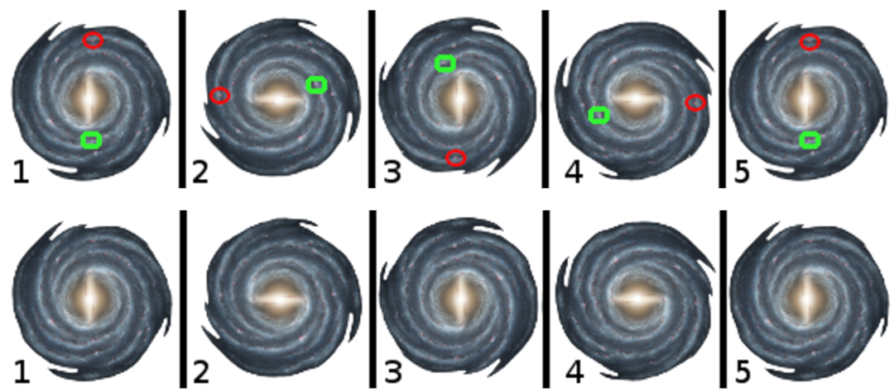
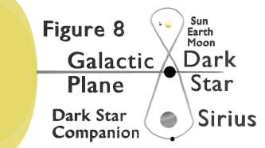
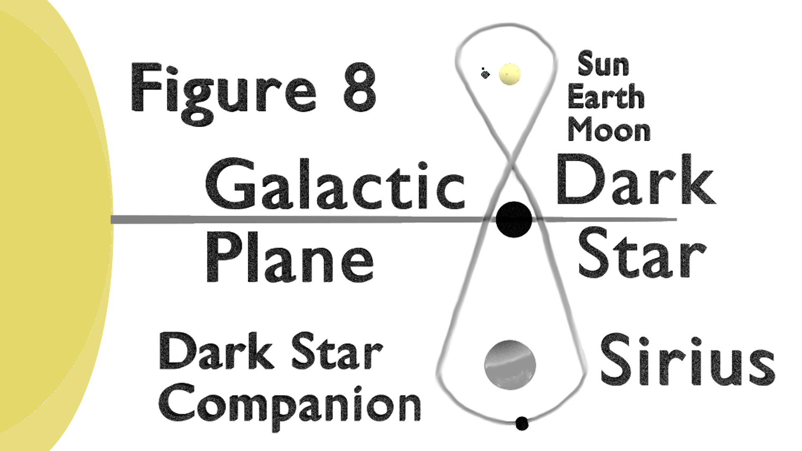
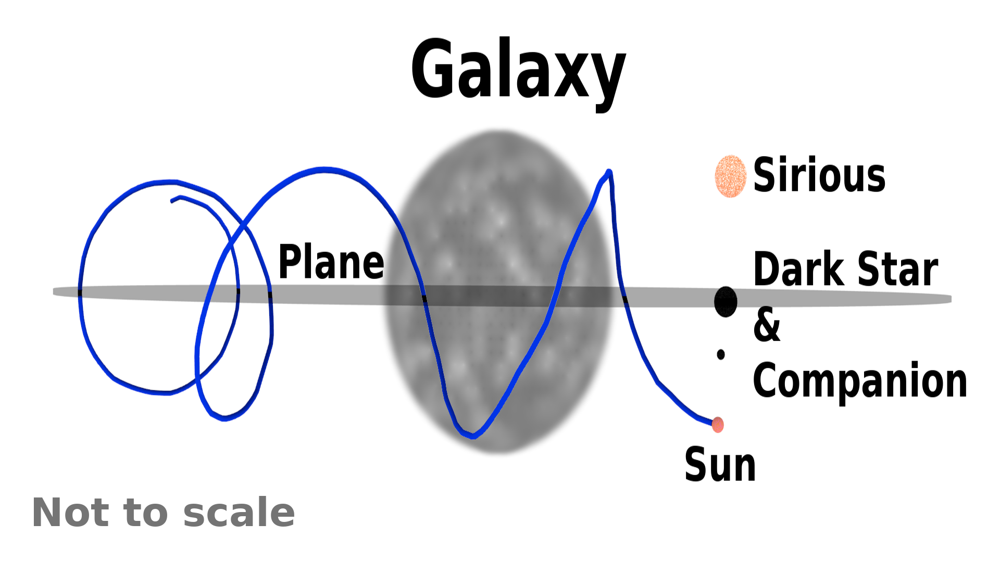
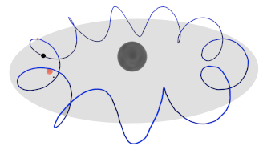
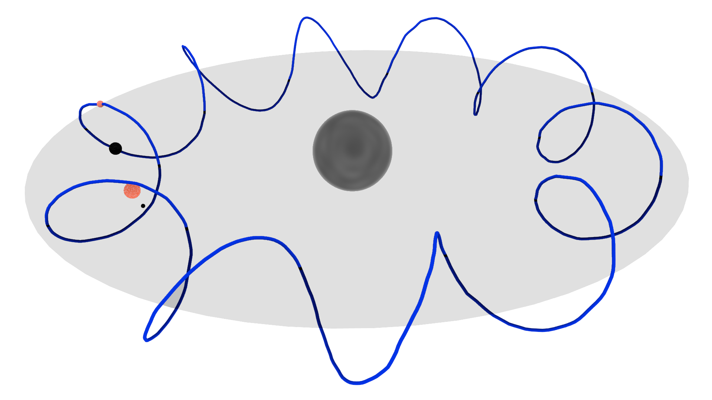
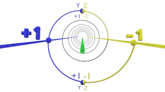
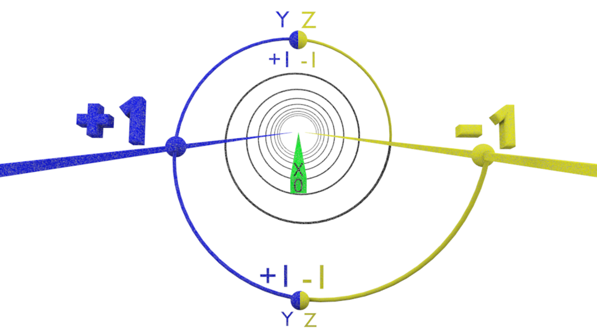
Please examine this diagram, and notice the ground is the center, and the Electron does not travel on the Ground, or any circuit board trace, it orbits around it.
This is the same pattern that the Galaxy, Sun, Planets, and Moon, all follow.
Trinary Math
Galaxy Plot
Test Suite
GitHub Code Repository
This is the question the whole calculator was built to answer, and the answer is in the table rather than in an argument.
The Galaxy drives its Tracks. The signal sweeps out from the centre, every Ring reads it, and every Sun keeps pace with it. One rate for all of them. A Sun on an outer Track has farther to go, so it must travel faster in miles per hour to arrive at the same time, and it does: Max Speed is 1001 times the Track number, so Track 333 runs at 333,333 mph and Track 999 at 999,999 mph. Same rate, different speed. That is a record on a record player, and the Test Suite checks it on all 1,332 Tracks at once — the slowest Track divided by the fastest comes out at 1.000000.
The Sun does not drive the Planets that way. Each Planet falls around it on its own and keeps its own time. Mercury goes round in 88 days and Neptune takes 60,190, and nothing makes them arrive together because nothing is driving them together. Run the Orbit Calculator on any two of them and the periods have nothing in common.
That is the whole of it. A Galaxy is one driven system with one clock. A Solar System is a set of separate falls around one Star. The same Science covers both, and it is the driving that makes the difference, not the size.
It also says what to look for. If the Suns were not driven, the formation would wind up: the inner ones would lap the outer ones and the shape of the Galaxy would smear out within a few turns. It has not. The arms are still there. Something is holding the rate, and a frequency is the only thing that holds a rate.
This has to be said plainly, because a reader who mixes them will get a wrong answer and blame the
arithmetic.
The only theory in this work is the Trinary Engine. I cannot prove what is inside a Galaxy, a Sun,
a Planet, or a Moon, so that one is a theory and I call it one. Everything else here is a measurement, a
value carried in with a stated origin, or arithmetic done on those.
Einstein cannot be mixed in. He sets Light as dynamic, and has the Universe as both dynamic and
static. Trinary Science is the opposite: Light is static and the Universe is dynamic. The two do not
combine, and an argument that starts by assuming his position has already left this model behind.
That is not a complaint about him. It is a statement that the two systems answer different questions, and
their answers cannot be added together.
So review this on its own terms: check the values against what is measured, check the arithmetic, and check whether the numbers that arrive twice by unrelated routes really do agree. Those are all things anyone can do without accepting anything.
Written by Jeffrey Scott Flesher.
The Science is mine: the concepts, the constants, the values, and the conclusions. Where a value came from
someone else's notes or measurements, it says so where it appears.
The code, the documentation, and the checking of the arithmetic were worked out with the help of
Claude, an AI made by Anthropic. It found errors, ran the numbers, and wrote much of the wording.
It did not decide what is true here.